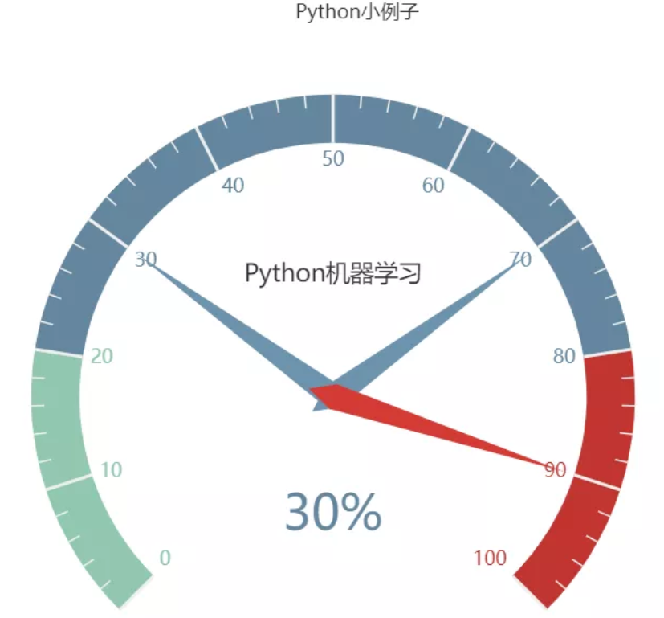

11 pyecharts绘制仪表盘¶
使用pip install pyecharts 安装，版本为 v1.6，pyecharts绘制仪表盘，只需要几行代码：
from pyecharts import charts
# 仪表盘
gauge = charts.Gauge()
gauge.add('Python小例子', [('Python机器学习', 30), ('Python基础', 70.),
('Python正则', 90)])
gauge.render(path="./data/仪表盘.html")
print('ok')
仪表盘中共展示三项，每项的比例为30%,70%,90%，如下图默认名称显示第一项：Python机器学习，完成比例为30%
